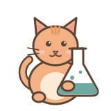

BC Teen Pathways
BC Teen Pathways AP Biology: test first, learn as you goAP 生物：先测，边测边学
Eight units, every official topic, original questions that train the reasoning AP rewards — with the explanation opening exactly where you need it.八个单元、每个官方主题、训练 AP 所看重推理的原创题——讲解只在你需要的地方展开。

🧬 Biology生物 Each AP subject keeps one colour across the site, the plan and the PDFs.每门 AP 学科在全站、规划和 PDF 里都用同一个颜色。
AP Biology rewards reasoning with evidence: read the data or model, make a claim, and justify it with the biology.AP 生物看重有证据的推理：读懂数据或模型，提出论点，用生物学原理来证明。
- Eight units; the multiple-choice weights range from 8–11% (Units 1 and 5) to 13–20% (Unit 7).八个单元；选择题占比从 8–11%（第 1、5 单元）到 13–20%（第 7 单元）。
- Half the score is 60 multiple-choice questions in 90 minutes, half is 6 free-response questions in 90 minutes.一半分数来自 90 分钟 60 道选择题，另一半来自 90 分钟 6 道问答题。
- Six Science Practices are tested in every unit: explain, read visuals, design, represent data, calculate and test statistically, argue.六项科学实践贯穿每个单元：解释、读图、设计、表示数据、计算与统计检验、论证。
“Memorise more facts.” Most AP questions give you the facts in a stimulus and test whether you can reason with them.「多背知识点。」多数 AP 题会在材料里给你事实，考的是你能不能用它们推理。
🗺️ The whole course, coloured by your mastery整门课的知识体系，按你的掌握度上色
○ not tested未测 ◔ needs practice要多练 ◑ getting there一般 ● mastered掌握 · grey to warm to green shows where you are, not how good you are; colours come from your own answers in this browser, nothing is uploaded从灰到暖到绿表示你走到哪，不表示你好不好；颜色来自你在本机浏览器里的作答，不上传
By Science Practice (skill)按科学实践（技能）
📚 The eight units八个单元
Unit 1第 1 单元 · Chemistry of Life生命的化学
Life's molecules are built from a few elements, joined and split with water, and their shapes decide what they do.生命分子由少数几种元素构成，靠水来连接与分开，它们的形状决定了功能。
8-11%26 questions题2 FRQ
Unit 2第 2 单元 · Cells细胞
A cell is enclosed by a plasma membrane, with internal membranes that make compartments; its small size gives a high SA:V and short diffusion distances, so exchange keeps up with its needs.细胞被质膜包围，内部的膜形成区室；细胞较小，SA:V 高、扩散距离短，物质交换才能跟上需求。
10-13%27 questions题2 FRQ
Unit 3第 3 单元 · Cellular Energetics细胞能量学
Living cells capture, store and release energy through enzyme-controlled pathways, and most of their ATP comes from a proton gradient across a membrane.活细胞通过受酶控制的代谢途径来获取、储存和释放能量，大部分 ATP 来自膜两侧的质子梯度。
12-16%25 questions题2 FRQ
Unit 4第 4 单元 · Cell Communication and Cell Cycle细胞通讯与细胞周期
Cells receive a signal, relay and amplify it through a pathway, and respond; the same logic of signals and feedback decides when a cell divides.细胞接收信号，经通路传递并放大后作出反应；同样的信号与反馈逻辑决定细胞何时分裂。
10-15%25 questions题2 FRQ
Unit 5第 5 单元 · Heredity遗传
Meiosis shuffles and halves chromosomes, and that physical behaviour is what makes inheritance predictable by probability.减数分裂打乱并减半染色体，正是这种物理行为让遗传可以用概率预测。
8-11%25 questions题2 FRQ
Unit 6第 6 单元 · Gene Expression and Regulation基因表达与调控
DNA is replicated to copy genetic information; genes are transcribed into RNA, and mRNA is translated into protein. Regulating which genes are expressed, and when, is what makes cells and organisms different.DNA 通过复制来拷贝遗传信息；基因被转录为 RNA，mRNA 再被翻译成蛋白质。调控哪些基因在何时表达，正是细胞和生物彼此不同的原因。
12-16%25 questions题2 FRQ
Unit 7第 7 单元 · Natural Selection自然选择
Populations evolve when allele frequencies change across generations, and natural selection, drift, gene flow and mutation are the ways that happens.当等位基因频率在世代间改变时种群就在进化，而自然选择、漂变、基因流和突变就是实现这种改变的途径。
13-20%25 questions题2 FRQ
Unit 8第 8 单元 · Ecology生态学
Organisms respond to their environment, energy flows through food webs and limits their size, and populations and communities change in ways we can model and calculate.生物对环境作出反应，能量流经食物网并限制其规模，种群与群落以我们可以建模和计算的方式变化。
10-15%25 questions题2 FRQ
flowchart TD A["Night before class: quick check + preview, 15 min"] --> B["Class"] B --> C["Same day: one practice round, reason first"] C --> D["Log class mistakes: number, skill, reason"] D --> E["Next days: review queue, 5 a day, variants"] E --> F["Every 2 units: a data set + one FRQ"] F --> G["From March: mock by official weights"] G --> A
flowchart TD A["课前一晚：快速诊断＋预习，15 分钟"] --> B["上课"] B --> C["当天：做一轮练习，先写理由"] C --> D["记课堂错题：题号、技能、原因"] D --> E["之后几天：复习队列，每天 5 题，变式题"] E --> F["每两个单元：一组材料题＋一道问答题"] F --> G["三月起：按官方权重整卷模拟"] G --> A
flowchart LR U1["1 Chemistry of Life"] --> U2["2 Cells"] U1 --> U3["3 Energetics"] U2 --> U3 U2 --> U4["4 Communication & Cell Cycle"] U4 --> U5["5 Heredity"] U1 --> U6["6 Gene Expression"] U5 --> U6 U5 --> U7["7 Natural Selection"] U6 --> U7 U3 --> U8["8 Ecology"] U7 --> U8
flowchart LR U1["1 生命的化学"] --> U2["2 细胞"] U1 --> U3["3 细胞能量学"] U2 --> U3 U2 --> U4["4 细胞通讯与周期"] U4 --> U5["5 遗传"] U1 --> U6["6 基因表达"] U5 --> U6 U5 --> U7["7 自然选择"] U6 --> U7 U3 --> U8["8 生态学"] U7 --> U8
🎯 Exam centre考试中心
Structure and scoring, official free-response questions 2023–2026 with scoring guidelines, question banks compared, and mock exams by the official weights.考试结构与评分、2023–2026 官方问答题与评分标准、题库对比、按官方权重的模拟考。
🧭 How to prepare怎么备考
A month-by-month route to May, task verbs, how to use official FRQs, and why we never use leaked “recalled” questions.到五月的逐月路线、任务动词、怎么用官方问答题，以及为什么我们从不用泄露的「机经」。
📒 My class mistake log我的课堂错题本
Log class practice mistakes by number, skill and reason; see your patterns and missed questions grouped by topic.按题号、技能和原因记录课堂错题；看规律，并按知识点查看答错的题。
⚖️ This site and a typical AP class: what each does best本站与常见 AP 培训班：各自擅长什么
| Step环节 | Typical tutoring centre常见培训班 | This site本站 |
|---|---|---|
| Pace节奏 | About 1.5 units per lesson; you keep up.每节课约 1.5 个单元，你要跟上。 | ✓ Set where your class is; the site points to the next unit to preview.标出课上到哪；网站提示下一个该预习的单元。 |
| Diagnosis诊断 | A teacher notices over weeks.老师几周后才看得出来。 | ✓✓ A quick check per unit colours every official topic by your mastery.每单元一次快速诊断，把每个官方主题按掌握度上色。 |
| Practice questions练习题 | Large sets from official past materials.大量来自官方历年材料的题。 | ✓ 203 original questions by topic and Science Practice; official questions linked.203 道按主题与科学实践出的原创题；官方题给链接。 |
| Reasoning推理 | “Working” box under each question, marked by the teacher.每题下的「推理过程」框，老师批改。 | ✓ Write a reason first, then a Claim–Evidence–Reasoning model and why each wrong option is tempting.先写理由，再看「论点—证据—推理」示范和每个错误选项为什么诱人。 |
| After a mistake错了之后 | Redo the same question.重做原题。 | ✓✓ The concept opens, a same-idea variant appears; reviews use variants, not the original.概念讲解展开，出一道同概念变式题；复习用变式题而不是原题。 |
| Written answers (FRQ)问答题 | A teacher marks and comments.老师批改点评。 | — 16 original FRQs with a three-move scaffold, scoring points and model answers; no human marker.16 道原创问答题，带三步脚手架、得分点和示范答案；没有真人批改。 |
| Mock exams模拟考 | Printed mocks in class.课上做纸质模拟卷。 | ✓ Mocks drawn by the official unit weights, optional timer, a unit × skill breakdown and a next-week review list.按官方单元权重抽题，可选计时，交卷后列出各单元、各技能的得分和下周复习清单。 |
| Questions you can’t answer alone自己解决不了的问题 | Ask the teacher in class.课上问老师。 | — “Ask AI” prompts and how to check the answer; for anything still unclear, ask your teacher.「向 AI 提问」的提示与核对方法；仍然不清楚的，问老师。 |
| Calm平静 | Fast pace and comparison.节奏快、互相比较。 | ✓✓ Short rounds, no ranking, no timer unless you choose one.短轮次、不排名，除非你自己选，否则不计时。 |
✓✓ = something this site does more of; ✓ = similar; — = a live teacher does it better. Best used together.✓✓＝本站做得更多；✓＝相当；—＝真人老师做得更好。两者搭配最好。
⭐ Official and free sources we build on我们依据的官方与免费资源
Links open the original sites; every link was checked to exist when this page was built.链接直达原网站；每条都在构建时核过可访问。
🤖 Good questions to ask an AI向 AI 提的好问题
🖨️ Print it打印下来

You don’t have to do all eight units this week. One quick check tells you the next small step.这周不用把八个单元全做完。做一次快速诊断，就知道下一小步是什么。